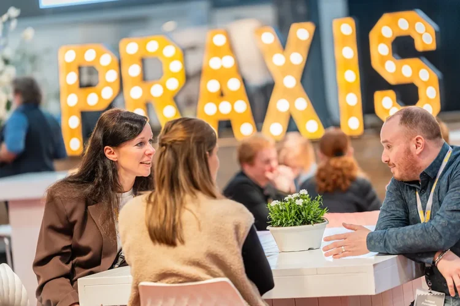

Eventfotografie
Een evenement zit vol momenten die maar één keer gebeuren. Een volle zaal, een goed gesprek, die ene reactie tijdens een presentatie. Ik werk zo onopvallend mogelijk, zodat je gasten zich op het event richten en ik de dag kan vastleggen zoals hij was.
Congressen, klantendagen, netwerkbijeenkomsten, personeelsevents, open dagen, beurzen en festivals.